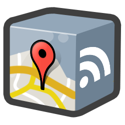

How Do I Start?
If you're new to the Maps Data API, here's how we recommend you get started:
- Get familiar with the Google Data APIs.
- Read the Maps Data API Developer's Guide.
- Refer to the HTTP Protocol Reference as needed.
What is the Maps Data API?

The Google Maps Data API allows client applications to view, store and update map data in the form of Google Data API feeds using a data model of features (placemarks, lines and shapes) and maps (collections of features).
Some Use Cases:
- A personal tool for planning and journaling trips
- A community site for mapping hiking trails
- A mobile application for saving favorite restaurants
Why Use the Google Maps Data API?
- Storage scales simply with usage. You shouldn't have to worry about maintaining a data store to build a cool Google Maps mashup. Focus on building the client, and we'll provide hosting and bandwidth for free.
- Geodata is accessible across platforms and devices. With many client libraries and clients, accessing stored geodata is possible from anywhere, whether it's on the web, a mobile phone, a 3D application, or even a command line.
- Realtime geodata requires realtime indexing. For a lot of geographic content, freshness is important. Geodata from the Google Maps Data API can be instantly indexed and made searchable in Google Maps.
- Rendering geodata is better and faster with the right tools. Through JavaScript, Flash, 3D, static images and more, we'll continue to provide better ways to render your content to meet platform and latency demands.
Some Applications That Have Already Been Made:
- My Maps Editor for Android allows users to create and edit personalized maps from an Android mobile phone. Integration with the phone's location and camera makes it easy to document a trip with photos and text on a map.
- ConnectorLocal is a service that informs users about the places where they live, work and visit by gathering trusted hyperlocal information from many sources. Using the Google Maps Data API, ConnectorLocal makes it easy for users to import and export geodata in and out of Google Maps, and also improves their ability to have data indexed in Google Maps for searching.
- My Tracks enables Android mobile phone users to record GPS tracks and view live statistics while jogging, biking, or participating in other outdoor activities. Stored with Google Maps Data API, these tracks can be accessed, edited and shared using the My Maps feature in Google Maps.